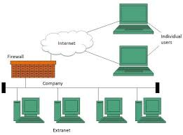

An extranet is a controlled private network that allows selected external users such as business partners, suppliers, or clients to access specific parts of an organization's intranet in a secure and limited way.
An extranet extends an organization's internal intranet to trusted outside parties. External users are given secure login credentials that grant them access only to the specific areas or information they are authorized to see. The connection is protected using encryption and authentication, ensuring that sensitive internal data remains secure while still enabling collaboration with outside parties.
Extranets allow businesses to collaborate efficiently and securely with partners, suppliers, and clients without exposing their entire internal network. For example, a company might give a supplier access to its inventory system through an extranet so they can track stock levels and plan deliveries — all without having full access to the company's internal systems.